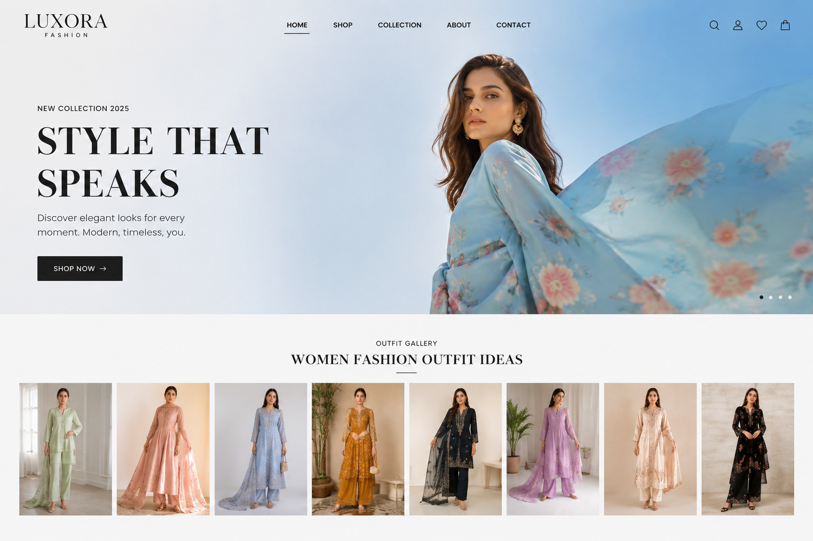
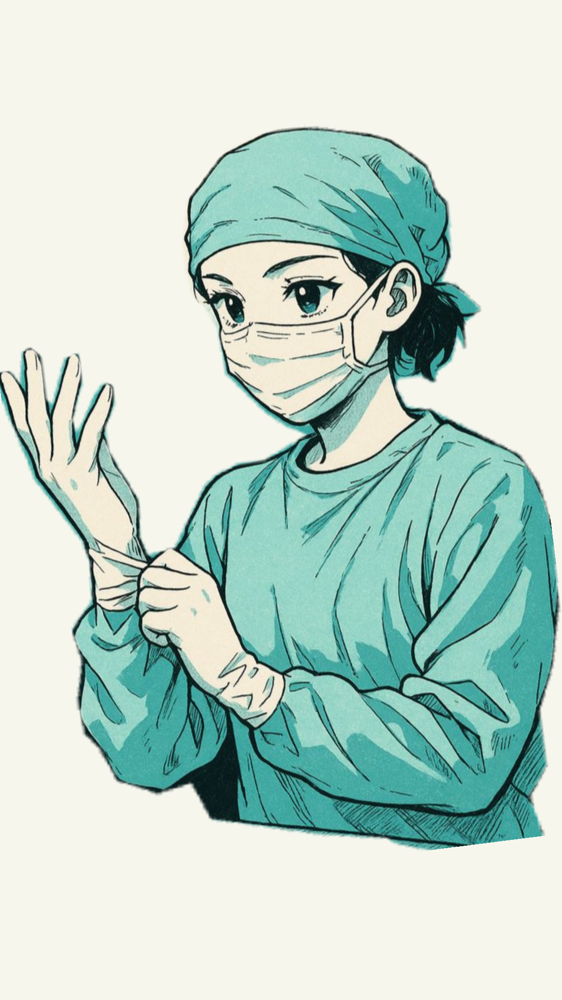
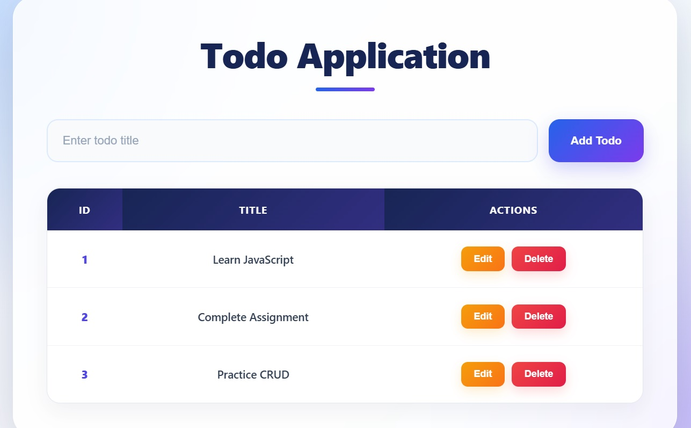

01
Mid-Term Exam Project
A responsive website created as part of my Web Development mid-term examination project.
Live Demo ↗WELCOME TO MY PORTFOLIO
I create clean, modern and engaging digital experiences using creativity, design and web technologies.
GET TO KNOW ME

I am a dedicated Operation Theater student with an interest in technology and web development.
Alongside my studies, I am learning HTML, CSS and JavaScript and developing my skills to create clean, modern and user-friendly digital experiences.
Let's TalkWHAT I DO
Building clean and semantic website structures.
Creating modern, responsive and attractive designs.
Adding interactive and dynamic website features.
Creating creative and professional visual designs.
MY CREATIVE WORK

01
A responsive website created as part of my Web Development mid-term examination project.
Live Demo ↗
02
A simple and interactive To-Do application created using HTML, CSS and JavaScript.
Live Demo ↗MY ACADEMIC JOURNEY
Bano Qabil — [ Rehmat Masjid Campus ]
Currently learning the fundamentals of modern web development and building responsive websites using HTML, CSS and JavaScript. I am developing my understanding of website structure, styling, layouts, responsive design and basic interactivity.
Academic Learning & Practical Knowledge
Studying Operation Theater related subjects while developing knowledge of healthcare, patient care, teamwork, discipline and professional responsibilities.
Speech Debater • Class Teacher • Student Activities
Actively participated in college activities and worked as a speech debater and class teacher. These experiences helped me improve my communication, confidence, presentation and leadership abilities.
Creative Design • Digital Content • Visual Projects
Developed creative skills through graphic design and digital content projects. I enjoy working with visual layouts, typography, colors and creative ideas, and I am now combining these design skills with my web development learning.
Student Records • Academic Documentation
Maintained and prepared academic information and student documentation as part of my educational journey. This helped me develop better organization, responsibility and attention to detail.
Skills • Education • Projects • Creative Experience
Created and organized my professional CV to present my education, technical skills, creative abilities and academic projects in a clear and professional way.
MY LEARNING JOURNEY
My struggle has mainly been about understanding myself, managing my studies, and learning new things while trying to build a better future. As a student, I sometimes feel confused about which direction I should choose and which skills will be useful for me in the future. It is not always easy to balance studies with learning something new, especially when you are still trying to understand your own strengths and interests.
When I started learning web development, I realized that learning a new skill takes time and patience. There were many concepts that seemed difficult at first, and sometimes I made mistakes in my code or could not understand why something was not working. I had to try again, search for the problem, understand my mistake, and then improve it. These small challenges sometimes became frustrating, but they also taught me that making mistakes is a normal part of learning.
Another challenge has been staying consistent. Some days I feel highly motivated and want to learn everything at once, while on other days it becomes difficult to focus. Slowly, I have learned that progress does not always have to be big. Even learning one new concept or improving one small thing is still progress.
I would not describe my journey as a story of major hardships. My struggle is more about growing, learning, making mistakes, building confidence, and figuring out what I want to achieve in the future. I am still at the beginning of my journey, but I believe that the skills and experiences I gain today will help me create better opportunities for myself tomorrow.
LET'S CONNECT
Have a project or idea? Feel free to get in touch.
📧 akramrajpoot1211@gmail.com 💬 WhatsApp 📘 LinkedIn